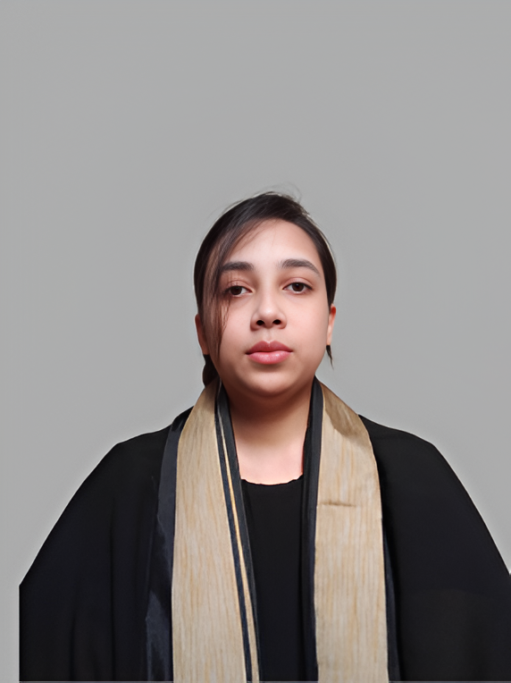

Focused on building reliable software through testing and quality assurance.
I am a Computer Science student focused on Software Quality Assurance (SQA). I have hands-on experience in manual testing, automation testing using Selenium and Playwright, and API testing with Postman.
I enjoy identifying bugs, improving software reliability, and building effective testing workflows while exploring Artificial Intelligence and Machine Learning from a research perspective.
Northern University Bangladesh
BSc in Computer Science & Engineering
Timeline: June 2022 - Present
Status: Ongoing
Completed Software Quality Assurance course covering Manual Testing, Test Case Writing, Bug Reporting, Automation Testing with Selenium, Playwright, and API Testing using Postman.